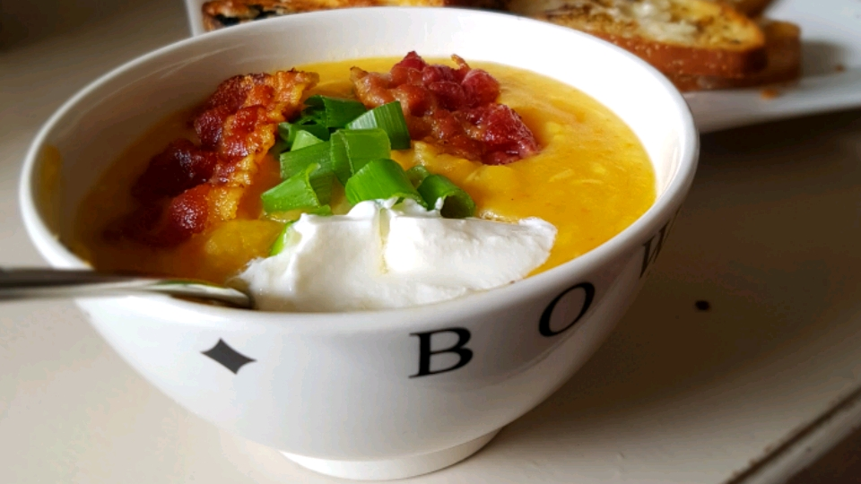

Bacon Potato Soup

Description
An easy and delicioius creamy potato soup recipe that can be made in just one pot! Loaded with bacon and creamy potato goodness, this is a favorite comfort food in my household.
Ingredients
- 6 thick slices of bacon
- 1½ teaspoons olive oil
- ½ cup of chopped onion
- ½ cup of chopped carrots
- 1 chopped stalk celery
- 4 cups of low fat, low sodium chicken broth
- 4 cups of cubed potatoes
- ⅛ teaspoon of cayenne pepper
- ½ cup of shredded cheddar cheese
- ½ teaspoon of kosher salt
Directions
- Cook bacon until it's crispy in a 3¼ saucepan, remove and drain well on paper towels. Discard bacon grease and wipe pan thoroughly with paper towel.
- Meanwhile, prepare vegetables. Add olive oil to saucepan and add onion, carrot, and celery as they are cut up. Saute until onion is soft but not brown, 3-4 minutes.
- Stir in chicken broth, potatoes, and pepper; bring to a boil, reduce heat, and simmer, covered, until potatoes are tender, about 10-15 minutes.
- Stir in cheese, heating just until melted--do not boil. Chop bacon and add it to the soup. Adjust seasoning to taste by adding salt, if desired.